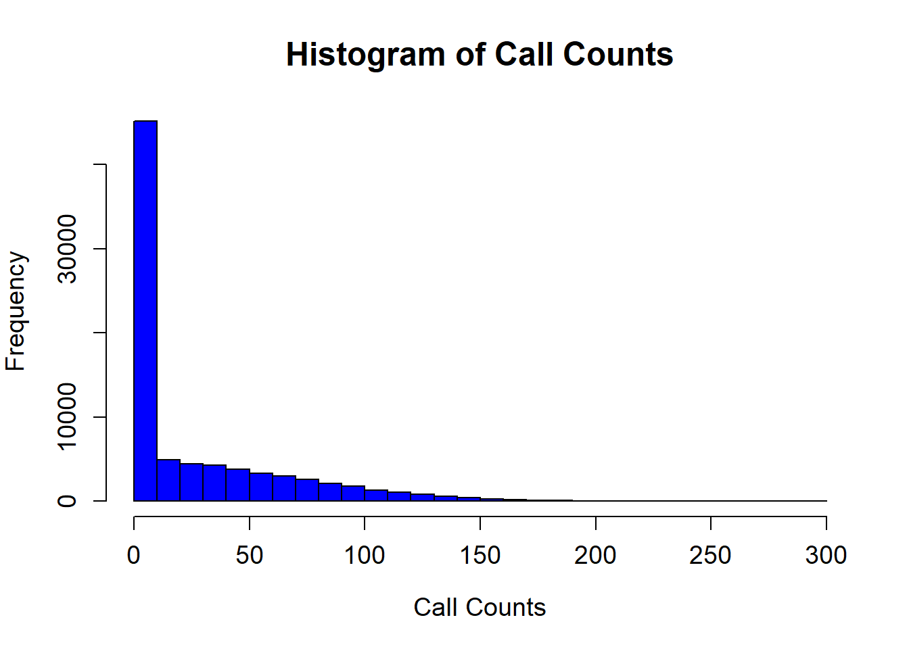
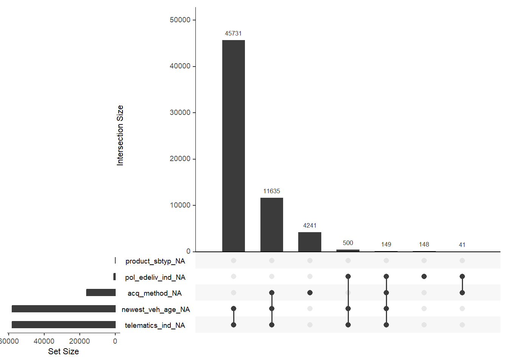
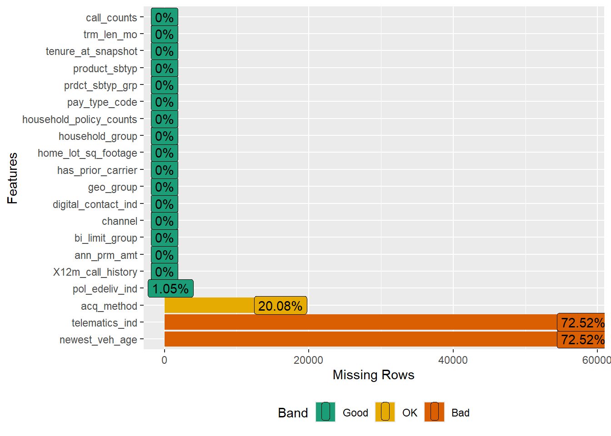
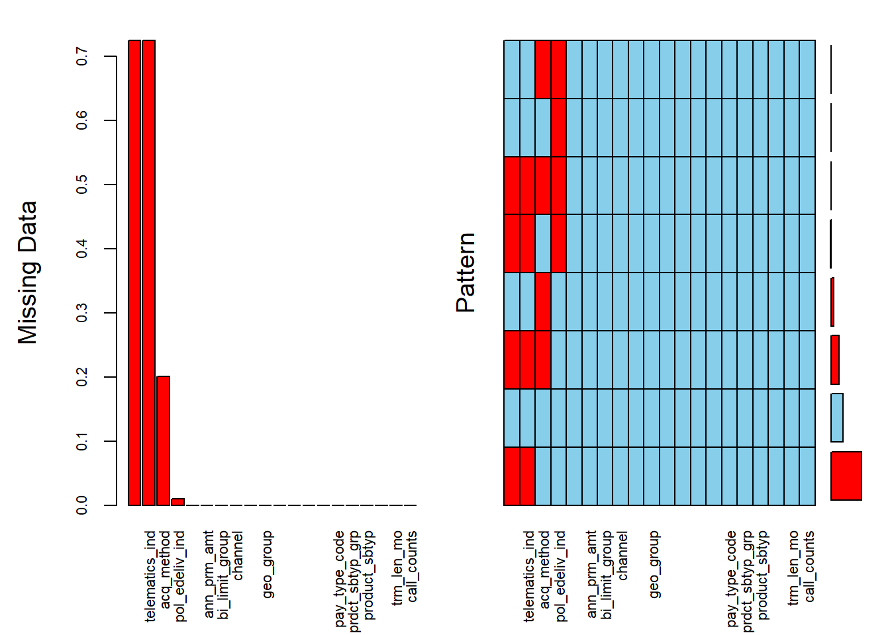
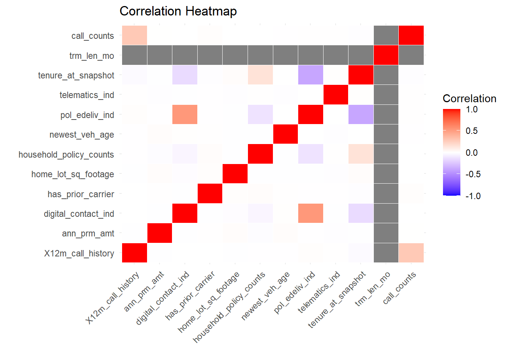
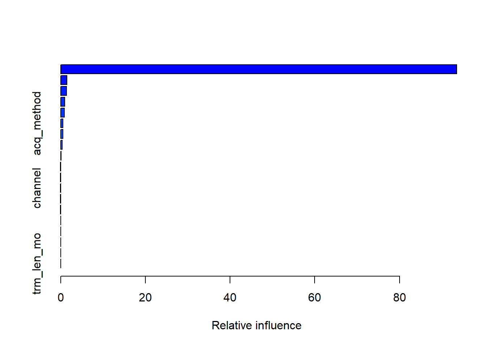
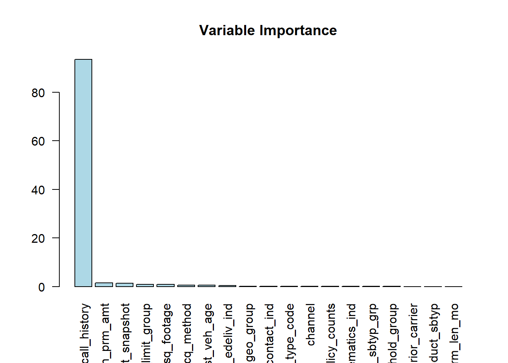

acq_method newest_veh_age pol_edeliv_ind telematics_ind
16066 58015 838 58015 [1] 50.18As an employee of CloverShield Insurance company, you are tasked with addressing the challenge of reducing call center costs. Your business partners have requested the development of a predictive model that, based on the provided segmentation, forecasts the number of times a policyholder is likely to call. This model aims to optimize resource allocation and enhance cost-efficiency in call center operations.
To find all our works on this project go to this link https://github.com/maksudatoma/2024-Travelers-University-Modeling-Competition/tree/main
The data obtained from Kaggle, is split into two parts: training data and validation data. In the validation data, the target variable, call_counts, is omitted. The training dataset contains 80,000 samples, and the validation dataset contains 20,000 samples.
Variable Descriptions
ann_prm_amt: Annualized Premium Amount
bi_limit_group: Body injury limit group (SP stands for single split limit coverage, CSL stands for combined single limit coverage)
channel: Distribution channel
newest_veh_age: The age of the newest vehicle insured on a policy (-20 represents non-auto or missing values)
geo_group: Indicates if the policyholder lives in a rural, urban, or suburban area
has_prior_carrier: Did the policyholder come from another carrier
home_lot_sq_footage: Square footage of the policyholder’s home lot
household_group: The types of policy in household
household_policy_counts: Number of policies in the household
telematics_ind: Telematic indicator (0 represents auto missing values or didn’t enroll and -2 represents non-auto)
digital_contacts_ind: An indicator to denote if the policy holder has opted into digital communication
12m_call_history: Past one year call count
tenure_at_snapshot:Policy active length in month
pay_type_code: Code indicating the payment method
acq_method:The acquisition method (Miss represents missing values)
trm_len_mo: Term length month
pol_edeliv_ind: An indicator for email delivery of documents (-2 represents missing values)
aproduct_sbtyp_grp: Product subtype group
product_sbtyp: Product subtype
call_counts: The number of call count generated by each policy (target variable)
First, we prepares the data by cleaning and transforming it (e.g., converting characters to factors, marking missing values.)
| Variable | Number of missing values |
|---|---|
| acq_method | 16,066 |
| newest_veh_age | 58,015 |
| pol_edeliv_ind | 838 |
| telematics_ind | 58,015 |
Zero Values: 50.18% of the rows in the call_counts column are zeros, indicating that most customers made no calls. This is significant and might suggest using models like Zero-Inflated Poisson (ZIP) to handle the high frequency of zeros.
Key Takeaways - The dataset contains both numeric and categorical variables, with some columns having significant missing values. - The target variable (call_counts) is heavily zero-inflated and skewed, which may require specialized modeling approaches. - Some numeric variables, like ann_prm_amt and home_lot_sq_footage, have wide ranges and outliers, suggesting that data transformation or scaling may be beneficial.
acq_method newest_veh_age pol_edeliv_ind telematics_ind
16066 58015 838 58015 [1] 50.18


3.This visualization highlights missing data patterns in the dataset. The left panel shows that telematics_ind and newest_veh_age have the highest proportion of missing values (~70%), while pol_edeliv_ind has a smaller proportion (~10%). The right panel reveals that most rows have no missing data (blue squares), but missingness in telematics_ind and newest_veh_age often co-occurs. Other features have negligible or no missing data. It is recommended to either impute or exclude telematics_ind and newest_veh_age depending on their importance, while simpler imputation methods can handle pol_edeliv_ind.

Variables sorted by number of missings:
Variable Count
newest_veh_age 0.7251875
telematics_ind 0.7251875
acq_method 0.2008250
pol_edeliv_ind 0.0104750
X12m_call_history 0.0000000
ann_prm_amt 0.0000000
bi_limit_group 0.0000000
channel 0.0000000
digital_contact_ind 0.0000000
geo_group 0.0000000
has_prior_carrier 0.0000000
home_lot_sq_footage 0.0000000
household_group 0.0000000
household_policy_counts 0.0000000
pay_type_code 0.0000000
prdct_sbtyp_grp 0.0000000
product_sbtyp 0.0000000
tenure_at_snapshot 0.0000000
trm_len_mo 0.0000000
call_counts 0.0000000The correlations output show that X12m_call_history (r=0.28) is the strongest numeric predictor of call_counts, with a moderate positive relationship. Other variables like telematics_ind (𝑟=0.0059) and pol_edeliv_ind (𝑟=0.0049) have very weak positive correlations, while variables like household_policy_counts (r=−0.0033) and newest_veh_age (r=−0.0030) have negligible negative correlations. Most numeric variables show correlations close to zero, suggesting little to no linear relationship with the target variable. Overall, X12m_call_history is the most promising numeric predictor, while others may require further evaluation for relevance in modeling.
X12m_call_history ann_prm_amt digital_contact_ind
0.2799527640 0.0009293953 0.0026141348
has_prior_carrier home_lot_sq_footage household_policy_counts
0.0005052426 0.0009486643 -0.0033470952
newest_veh_age pol_edeliv_ind telematics_ind
-0.0030184309 0.0048667762 0.0058867474
tenure_at_snapshot trm_len_mo call_counts
-0.0014746341 0.0007817227 1.0000000000 Correlation Matrix: The correlation heatmap shows that X12m_call_history has the strongest positive correlation (r≈0.28) with call_counts, making it the most important numeric predictor. Most other variables, such as ann_prm_amt, household_policy_counts, and home_lot_sq_footage, have weak or no significant correlations with the target variable, as indicated by grey cells. There are no strong negative correlations in the dataset. Overall, the relationships are mostly weak, suggesting that non-linear models or feature engineering may be needed to capture more complex interactions. The heatmap helps identify X12m_call_history as a key feature while others may contribute less linearly.

The dataset is prepared by converting character columns to factors and handling missing data by replacing coded values such as -2, -20, and “missing” with NA. The code then calculates the percentage of zero values in the call_counts column to assess the distribution of the response variable. To address these missing values, the mice function performs multiple imputation, generating five potential datasets and selecting one for subsequent analysis to ensure consistency. For imputation, the mice function is used with a vector of default methods tailored to different types of variables: predictive mean matching (pmm) for numeric data, logistic regression imputation (logreg) for binary (factor with 2 levels), polytomous regression imputation (polyreg) for unordered categorical data with more than two levels, and the proportional odds model (polr) for ordered factors with more than two levels.
Finally, adjustments are made to factor variables to exclude “missing” as a level, preserving data integrity.
The ANOVA results evaluate the effect of categorical variables on call_counts. Among the predictors, acq_method is marginally significant (p=0.0518), suggesting it may have a weak influence on call_counts. All other categorical variables, such as bi_limit_group, channel, and geo_group, have p-values greater than 0.1, indicating no statistically significant relationship with the target variable. Additionally, 16,066 rows were excluded due to missing data, which might affect the robustness of the results. It is recommended to focus on acq_method for further analysis and consider handling missing data to improve model accuracy.
$acq_method
Df Sum Sq Mean Sq F value Pr(>F)
trav[[var]] 3 11110 3703 2.579 0.0518 .
Residuals 63930 91805237 1436
---
Signif. codes: 0 '***' 0.001 '**' 0.01 '*' 0.05 '.' 0.1 ' ' 1
16066 observations deleted due to missingness
$bi_limit_group
Df Sum Sq Mean Sq F value Pr(>F)
trav[[var]] 7 2207 315.3 0.22 0.981
Residuals 79992 114719475 1434.1
$channel
Df Sum Sq Mean Sq F value Pr(>F)
trav[[var]] 1 146 146.2 0.102 0.75
Residuals 79998 114721536 1434.1
$geo_group
Df Sum Sq Mean Sq F value Pr(>F)
trav[[var]] 2 5412 2706 1.887 0.152
Residuals 79997 114716270 1434
$household_group
Df Sum Sq Mean Sq F value Pr(>F)
trav[[var]] 3 2624 874.7 0.61 0.608
Residuals 79996 114719058 1434.1
$pay_type_code
Df Sum Sq Mean Sq F value Pr(>F)
trav[[var]] 2 117 58.7 0.041 0.96
Residuals 79997 114721565 1434.1
$prdct_sbtyp_grp
Df Sum Sq Mean Sq F value Pr(>F)
trav[[var]] 2 1861 930.6 0.649 0.523
Residuals 79997 114719821 1434.1
$product_sbtyp
Df Sum Sq Mean Sq F value Pr(>F)
trav[[var]] 2 117 58.7 0.041 0.96
Residuals 79997 114721565 1434.1 Call_counts distribution with significant predictor The violin plot shows the distribution of call_counts across different acquisition methods (acq_method). All methods have a heavily skewed distribution, with most values near 0 and a few extreme outliers, indicating that the majority of customers make few calls. The distributions are nearly identical across all methods, including the NA category, suggesting that acq_method has minimal impact on call_counts. This aligns with the ANOVA results, where acq_method was marginally significant. Further analysis, such as handling outliers or exploring interactions with other variables, may provide additional insights.

Before fitting any models, we will split the provided training dataset into three subsets: 60% for training, 20% for validation, and 20% for testing. This split will be done while ensuring stratification based on the variable call_counts. Stratification preserves the distribution of call_counts across all subsets, confirmed by the nearly identical means of the subsets. The training set is used to build the model, the validation set is used for tuning and performance assessment during training, and the test set is reserved for final evaluation. This ensures unbiased and representative splits for reliable model training and testing.
[1] 25.93654[1] 25.88844[1] 25.85405Model 1 GBM : We trained a GBM model using 500 trees with a Poisson distribution to predict call_counts. The hyperparameters for this model were selected by trial and error. Attempts to use specific functions (e.g. the train function) for hyperparameter tuning were unsuccessful due to insufficient computer memory needed to execute the code. This model achieved a test RMSE of 36.0051, indicating moderate prediction error, suggesting the predictions deviate by about 36 calls on average from actual values.
The variable importance plot shows the relative importance of the top 10 predictors. X_12m_call_history is the most important predictor, with its relative information gain being 92.64%. The remaining 9 variables account for only 7.38% of the relative information gain.
[1] 36.05584
var rel.inf
X12m_call_history X12m_call_history 93.526063543
ann_prm_amt ann_prm_amt 1.485827786
tenure_at_snapshot tenure_at_snapshot 1.382388639
bi_limit_group bi_limit_group 0.919434033
home_lot_sq_footage home_lot_sq_footage 0.866828450
acq_method acq_method 0.552749637
newest_veh_age newest_veh_age 0.521227944
pol_edeliv_ind pol_edeliv_ind 0.367799729
geo_group geo_group 0.072965043
digital_contact_ind digital_contact_ind 0.050841381
pay_type_code pay_type_code 0.047082796
channel channel 0.044233604
household_policy_counts household_policy_counts 0.043407241
telematics_ind telematics_ind 0.043253949
prdct_sbtyp_grp prdct_sbtyp_grp 0.036205158
household_group household_group 0.031968172
has_prior_carrier has_prior_carrier 0.007722895
product_sbtyp product_sbtyp 0.000000000
trm_len_mo trm_len_mo 0.000000000 var rel.inf
X12m_call_history X12m_call_history 93.526063543
ann_prm_amt ann_prm_amt 1.485827786
tenure_at_snapshot tenure_at_snapshot 1.382388639
bi_limit_group bi_limit_group 0.919434033
home_lot_sq_footage home_lot_sq_footage 0.866828450
acq_method acq_method 0.552749637
newest_veh_age newest_veh_age 0.521227944
pol_edeliv_ind pol_edeliv_ind 0.367799729
geo_group geo_group 0.072965043
digital_contact_ind digital_contact_ind 0.050841381
pay_type_code pay_type_code 0.047082796
channel channel 0.044233604
household_policy_counts household_policy_counts 0.043407241
telematics_ind telematics_ind 0.043253949
prdct_sbtyp_grp prdct_sbtyp_grp 0.036205158
household_group household_group 0.031968172
has_prior_carrier has_prior_carrier 0.007722895
product_sbtyp product_sbtyp 0.000000000
trm_len_mo trm_len_mo 0.000000000
Model 2 ZIP: The Zero-Inflated Poisson (ZIP) model predicts call_counts while accounting for excess zeros. An attempt to use all variable sin this model resulted in errors in convergence and NA's for the standard errors, z-value and p-value. Instead, a subset of variables was considered based on the variable importance plot from the GBM model.
The ZIP model has has two parts:
The Count Model: variables that directly affect the frequency of calls were considered. These include X12_m_call_history, bi_limit_group , acq_method , geo_group , and interaction between acq_method and geo_group , and between X12_m_call_history and bi_limit_group.
The Zero-inflation Model: variables that indicate whether a customer is likely to have any calls at all were considered. These include X12_m_call_history and ann_prm_amt. The test RMSE from this model is 36.5291, which is marginally poorer than the RSME from the GBM model.
Call:
zeroinfl(formula = call_counts ~ X12m_call_history + bi_limit_group +
acq_method + geo_group + acq_method * geo_group + bi_limit_group *
X12m_call_history | X12m_call_history + ann_prm_amt, data = train_data,
dist = "poisson")
Pearson residuals:
Min 1Q Median 3Q Max
-12.2931 -0.8647 -0.7948 0.6500 11.0759
Count model coefficients (poisson with log link):
Estimate Std. Error z value
(Intercept) 3.9380412 0.0066910 588.555
X12m_call_history 0.0174296 0.0006291 27.706
bi_limit_groupCSLGrp2 -0.0635431 0.0084510 -7.519
bi_limit_groupCSLGrp3 -0.0151547 0.0085746 -1.767
bi_limit_groupNonAuto -0.0451932 0.0060560 -7.463
bi_limit_groupSPGrp1Miss -0.1067039 0.0085466 -12.485
bi_limit_groupSPGrp2 -0.0204733 0.0085495 -2.395
bi_limit_groupSPGrp3 -0.0335161 0.0085827 -3.905
bi_limit_groupSPGrp4 -0.0697019 0.0087231 -7.990
acq_methodmethod2 -0.0280901 0.0048045 -5.847
acq_methodmethod3 -0.0518030 0.0048603 -10.658
acq_methodmethod4 -0.0282855 0.0048476 -5.835
geo_groupsuburban -0.0389944 0.0048030 -8.119
geo_groupurban -0.0589009 0.0048447 -12.158
acq_methodmethod2:geo_groupsuburban 0.0555448 0.0068406 8.120
acq_methodmethod3:geo_groupsuburban 0.0434096 0.0069126 6.280
acq_methodmethod4:geo_groupsuburban 0.0615120 0.0068446 8.987
acq_methodmethod2:geo_groupurban 0.0572564 0.0068990 8.299
acq_methodmethod3:geo_groupurban 0.0366115 0.0069517 5.267
acq_methodmethod4:geo_groupurban 0.0580347 0.0069095 8.399
X12m_call_history:bi_limit_groupCSLGrp2 0.0125910 0.0009331 13.494
X12m_call_history:bi_limit_groupCSLGrp3 0.0071199 0.0010675 6.670
X12m_call_history:bi_limit_groupNonAuto 0.0044323 0.0006508 6.810
X12m_call_history:bi_limit_groupSPGrp1Miss 0.0150094 0.0010167 14.762
X12m_call_history:bi_limit_groupSPGrp2 0.0041280 0.0011267 3.664
X12m_call_history:bi_limit_groupSPGrp3 0.0031201 0.0009962 3.132
X12m_call_history:bi_limit_groupSPGrp4 0.0101909 0.0010464 9.739
Pr(>|z|)
(Intercept) < 2e-16 ***
X12m_call_history < 2e-16 ***
bi_limit_groupCSLGrp2 5.52e-14 ***
bi_limit_groupCSLGrp3 0.077161 .
bi_limit_groupNonAuto 8.48e-14 ***
bi_limit_groupSPGrp1Miss < 2e-16 ***
bi_limit_groupSPGrp2 0.016634 *
bi_limit_groupSPGrp3 9.42e-05 ***
bi_limit_groupSPGrp4 1.34e-15 ***
acq_methodmethod2 5.01e-09 ***
acq_methodmethod3 < 2e-16 ***
acq_methodmethod4 5.38e-09 ***
geo_groupsuburban 4.71e-16 ***
geo_groupurban < 2e-16 ***
acq_methodmethod2:geo_groupsuburban 4.67e-16 ***
acq_methodmethod3:geo_groupsuburban 3.39e-10 ***
acq_methodmethod4:geo_groupsuburban < 2e-16 ***
acq_methodmethod2:geo_groupurban < 2e-16 ***
acq_methodmethod3:geo_groupurban 1.39e-07 ***
acq_methodmethod4:geo_groupurban < 2e-16 ***
X12m_call_history:bi_limit_groupCSLGrp2 < 2e-16 ***
X12m_call_history:bi_limit_groupCSLGrp3 2.56e-11 ***
X12m_call_history:bi_limit_groupNonAuto 9.75e-12 ***
X12m_call_history:bi_limit_groupSPGrp1Miss < 2e-16 ***
X12m_call_history:bi_limit_groupSPGrp2 0.000249 ***
X12m_call_history:bi_limit_groupSPGrp3 0.001736 **
X12m_call_history:bi_limit_groupSPGrp4 < 2e-16 ***
Zero-inflation model coefficients (binomial with logit link):
Estimate Std. Error z value Pr(>|z|)
(Intercept) 4.256e-01 1.910e-02 22.287 <2e-16 ***
X12m_call_history -1.672e-01 3.970e-03 -42.126 <2e-16 ***
ann_prm_amt -2.069e-06 1.264e-05 -0.164 0.87
---
Signif. codes: 0 '***' 0.001 '**' 0.01 '*' 0.05 '.' 0.1 ' ' 1
Number of iterations in BFGS optimization: 54
Log-likelihood: -3.457e+05 on 30 Df[1] NAlibrary(caret)
library(dplyr)
library(mice)
trav <- read.csv("train_data.csv")
#Exclude first column (ID column)
trav <- trav[,-1]
trav <- trav %>%
mutate(across(where(is.character), as.factor))
trav[trav == -2 |trav == -20 | trav == "missing"] <- NA
missing_counts <- colSums(is.na(trav))
# Display variables with missing values and their counts
missing_counts[missing_counts > 0]
#Zero values for the response
per0resp <- sum(trav$call_counts == 0) / nrow(trav) * 100
per0resplibrary(caret)
library(dplyr)
library(mice)
trav <- read.csv("train_data.csv")
#Exclude first column (ID column)
trav <- trav[,-1]
trav <- trav %>%
mutate(across(where(is.character), as.factor))
trav[trav == -2 |trav == -20 | trav == "missing"] <- NA
missing_counts <- colSums(is.na(trav))
# Display variables with missing values and their counts
missing_counts[missing_counts > 0]
#Zero values for the response
per0resp <- sum(trav$call_counts == 0) / nrow(trav) * 100
per0resplibrary(caret)
library(dplyr)
library(mice)
trav <- read.csv("train_data.csv")
#Exclude first column (ID column)
trav <- trav[,-1]
trav <- trav %>%
mutate(across(where(is.character), as.factor))
trav[trav == -2 |trav == -20 | trav == "missing"] <- NA
missing_counts <- colSums(is.na(trav))
# Display variables with missing values and their counts
missing_counts[missing_counts > 0]
#Zero values for the response
per0resp <- sum(trav$call_counts == 0) / nrow(trav) * 100
per0resp